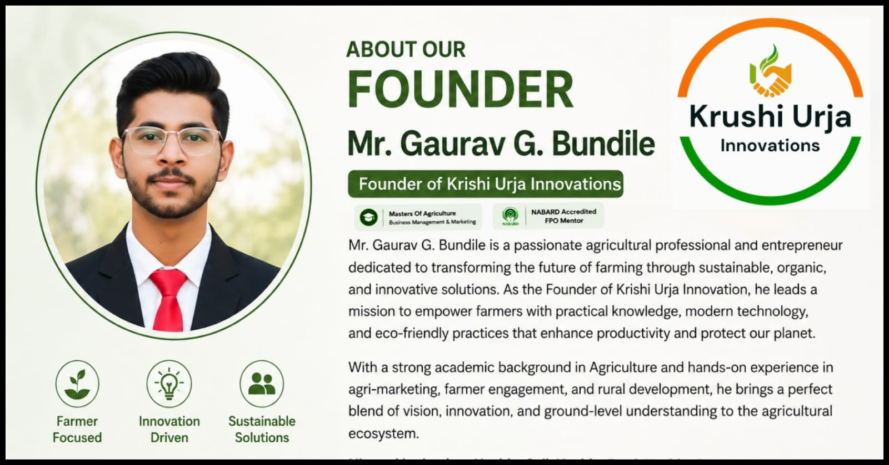
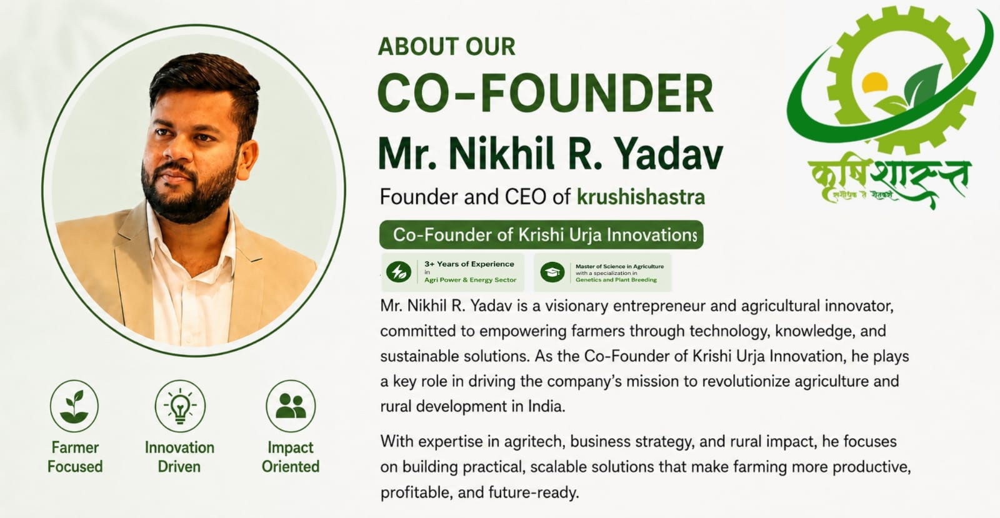

Krushi Urja Innovations is a sustainable agriculture consultancy and farmer training organization committed to supporting farmers through practical organic farming guidance, sustainable agricultural practices, and field-based learning programs.
Our work focuses on helping farming communities adopt environmentally responsible and economically sustainable agricultural methods through consultancy, training initiatives, farm guidance, and capacity-building programs.
We believe agriculture is not only a source of livelihood, but also the foundation of rural development, environmental sustainability, and future food security. Through practical learning, farmer engagement, and sustainable farming approaches, we aim to encourage resilient agricultural systems that create long-term value for both farmers and communities.
At Krushi Urja Innovations, we are dedicated to building trust-based relationships with farmers by promoting knowledge-driven agriculture, responsible farming practices, and continuous learning that supports sustainable growth and rural empowerment.


Get clarity on the organic certification process with answers to the most common questions we receive. Whether you're a farmer, processor, or exporter, we're here to guide you every step of the way.
Read MoreWe provide end-to-end solutions for organic farming, consultancy, training, inspection, documentation and sustainable rural development.
Comprehensive organic farming training for farmers, students, FPOs & agripreneurs.
Professional field inspection and organic verification for compliance.
Expert guidance for sustainable agriculture and organic certification.
Complete documentation support for organic certification and regulatory compliance.
Innovative waste management and rural sustainability solutions.
We are here to guide you with the right solutions for your agricultural needs.
Our main research and development project under Krushi Urja Innovations is based on the concept of “Waste to Wealth” and is currently in an advanced development stage.
Through this project, agricultural residues, organic waste, and bio-based resources are being transformed into green energy, biogas, and sustainable rural resource creation.
Simple steps toward sustainable farming and development
Consultation
Field Inspection
Documentation
Guidance
Certification Support
Sustainable Growth
Indian farmers are the backbone of the country’s economy. Their hard work and dedication drive national progress and social prosperity. Yet in rural areas, lack of technology, information, and modern management is still widely felt. Reducing this gap and connecting farmers to the digital era while empowering their effort with new technology is our inspiration.
Contact us for more information